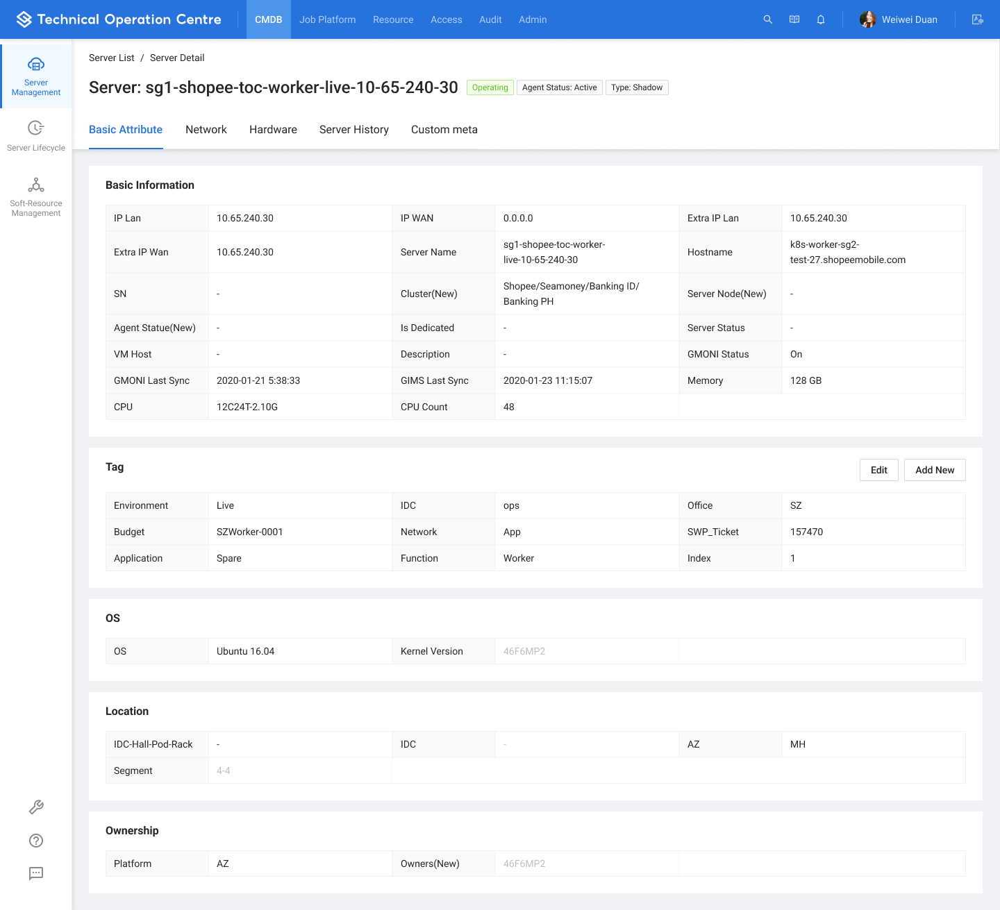
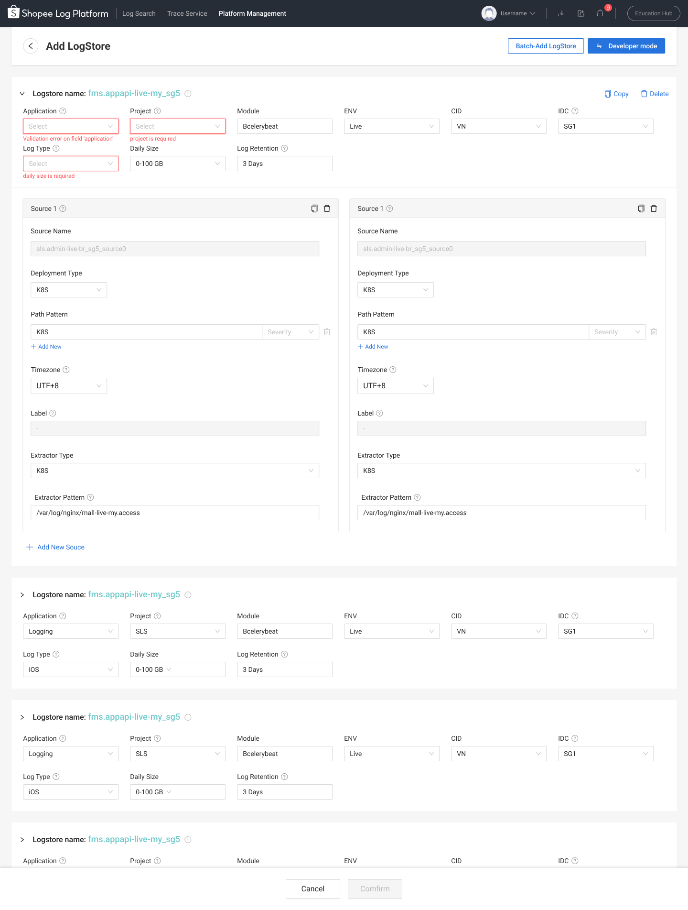
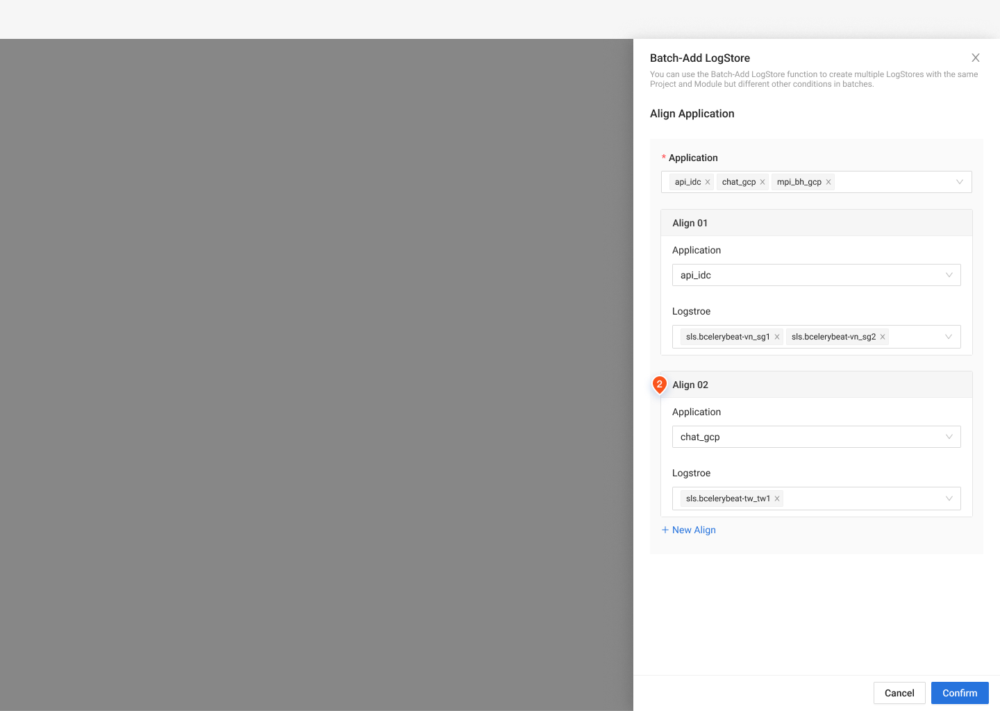
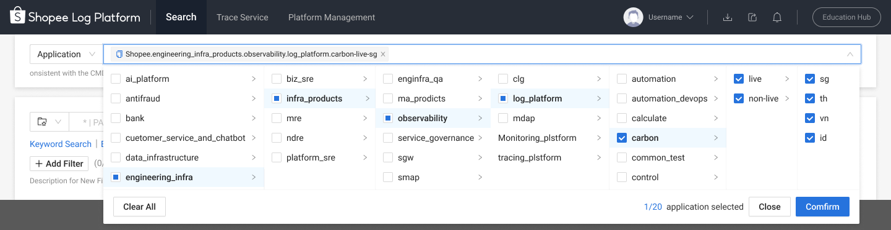

01 / 平台全景
先看整个工程世界，再进入几个具体问题。
读这张全景时，可以先沿一次服务上线与运行的任务看关系：确认归属、准备资源、部署、配置流量、申请权限，再监控与排障。蓝色标记指向本篇已有设计材料，其他产品共同构成平台语境。九领域呈现当前全貌，早期建设过程则在具体案例中展开。
蓝色 ↗ 展开设计案例 灰色 平台其他产品
Application Management（应用管理）
服务归属、交付与配置
Application Traffic（应用流量）
访问、路由、发现与互联
Resource（资源服务）
计算、数据与中间件支撑
Compute（计算）Database（数据库）Network（网络）
地址、设备、策略与连通性
AI Infra（AI 基础设施）
Agent 运行等基础能力
Observability（可观测性）
观察运行、调查故障
Governance & Workflow（治理与工作流）
身份、访问和操作流程
Infra Process（基础设施流程）
灾备、资源规划与容量
Server & AZ（服务器与可用区）
服务器、作业与地域上下文
一次典型工程任务，如何穿过产品边界
- 01
明确服务
Service CMDB 提供归属与资源上下文。
- 02
准备与交付
计算、网络、存储与部署产品支撑运行。
- 03
观察与处理
监控、日志和网络工具协同排障。
- 04
治理贯穿过程
身份、权限与工单支撑访问和操作。
02 / 领域认知与设计判断
全局理解，是在一次次深入业务中建立起来的。
早期没有一张完整地图可直接照着设计，部分产品也缺少专职产品经理。我与技术负责人、TPM 澄清业务，补充需求结构、用户访谈和行为分析，将分散信息整理成产品关系与关键链路。设计依据随着项目积累，成为成员接手时理解业务的基础。
- 从零到一
- 先界定用户、核心对象与主流程，建立第一版可继续发展的产品结构。
- 完整 Revamp
- 当旧结构阻碍任务时，重新组织入口、导航和关键工作流程。
- 渐进升级
- 与 TPM 合作，把视觉与体验升级分散到多个功能版本，降低迁移负担。
- 接手与维护
- 对从新加坡团队承接的成熟产品，按实际需要支持细小迭代。
03 / 三个切面
同一个平台，三种不同的设计难度。
下面选取三个代表案例，分别展开资源操作、服务关系与运行排障。它们体现不同的设计判断，也共同构成平台日常工作的基础。
04 / TOC · 资源操作
把“找到服务器”和“开始工作”连成一条路径。
查询并不是孤立的表单。用户从某个资源范围进入，需要组合专业条件，再读懂服务器状态、判断是否可操作。我把查询个性化和整体工作台结构一起推进。
一套查询能力 · 从实际使用到个人配置
组合查询条件
基础表单保留高频字段，追加条件承接临时任务。
TOC v1.1 · 查询优化
 放大查看完整原图 ↗
放大查看完整原图 ↗
选择常用字段
把个人常用的查询方式沉淀下来。
TOC v1.1 · 配置常用查询字段
放大查看完整原图 ↗确认最终使用形态
调整后预览，理解配置会怎样影响日常工作。
TOC v1.1 · 预览自定义表单
放大查看完整原图 ↗各图可独立放大查看完整原稿。
同一资源任务 · 从集合到单机
树驱动的工作台
当前资源范围、查询、列表与批量操作共同出现。
TOC v1.4 · 树驱动入口
 放大查看完整原图 ↗
放大查看完整原图 ↗
单台服务器详情
从资源集合下钻，检查单机属性和状态。
TOC v1.2.1 · 服务器详情方案

放大查看完整原图 ↗左为 v1.4 入口方案，右为 v1.2.1 详情方案；用来对照任务尺度，不作为同一版本的连续截图。
六个版本的推进顺序
- v1.0 → v1.1
- 梳理导航映射，再支持自定义查询表单。
- v1.2 → v1.2.1
- 重组高密度表格信息，继续展开单机详情。
- v1.3 → v1.4
- 明确资源树节点与层级，再探索树驱动的服务器入口。
05 / Service CMDB · 服务关系
从“我有哪些资源”，转向“这个服务需要什么”。
这里的设计难点是多个体系之间的对应：服务层级与组织归属、资源类型与部署单元、负责人和操作权限，以及用量和可执行的优化动作。每个关系都要在界面中找到合适的位置。
同一服务 · 定位、观察、判断与行动
定位服务与资源
服务树与页头建立当前上下文，资源入口围绕它展开。
Service CMDB v1.0 · 服务上下文
放大查看完整原图 ↗看整体资源用量
从跨资源总览进入服务和部署单元明细。
Service CMDB · 2023 / 资源用量
放大查看完整原图 ↗区分指标含义
用量、已部署资源与配额分别回答不同问题。
Service CMDB · 2023 / 用量明细
放大查看完整原图 ↗确认优化操作
把当前配置、建议值和变更放在一起，再做确认。
Service CMDB · 资源优化方案
放大查看完整原图 ↗覆盖 2022 初建与 2023 后续设计。各图保留当时的层级和指标口径，按任务关系对照。
- 结构层面
- 定位服务之后，切换资源仍保留服务身份；长名称、路径和层级需要共同组织。
- 责任层面
- Team、系统角色与自定义角色各有作用，服务负责人不自动等同于拥有全部操作权限。
- 决策层面
- 从总览发现问题，再进入明细和建议，最后核对具体变更。
06 / 日志平台 · 复杂排障
找到一条日志，只是调查问题的开始。
日志平台同时面向“使用日志排障”和“管理日志采集”两类任务。我建立早期设计基础，随后通过专业指导与评审把关后续质量：查询者需要读懂搜索进度和前后事件，配置者需要建立采集来源与业务映射，两条工作线要能衔接。
排障的一组连续问题 · 查到什么、前后如何、怎样继续分析
查询过程与结果一起看
时间分布、筛选条件、扫描状态与结果在同一工作台。
Log Platform v5.0 · 查询工作台
放大查看完整原图 ↗保留锚点追查上下文
从选中日志向前、向后展开，恢复事件发生的顺序。
Log Platform v4.19 · View in Context
放大查看完整原图 ↗把导出作为异步任务
继续查询的同时，查看导出结果、失败重试与过期状态。
Log Platform v4.19 · 异步导出
放大查看完整原图 ↗用完整工作台呈现任务复杂度；三张图分别来自 v5.0 与 v4.19，按排障任务组织。
查询背后的另一半 · 采集配置与业务映射
批量配置仍要逐项可控
多组 Logstore 与 Sources 共存，区分当前编辑项、校验和提交结果。
Log Platform v4.18 · 批量配置

放大查看完整原图 ↗让资源对应业务服务
补齐 Logstore 与 Application 的映射，支撑业务视角查询。
Log Platform v5.0 · Application Align

放大查看完整原图 ↗批量配置需保留未成功项以便修正；业务映射为后续查询入口变化提供基础。
从 Logstore 到 Application：怎样让已有用户接得上
后续版本将查询入口扩展到 Application、环境与区域。切换视角需要处理已有 Logstore 的映射关系，并保留旧模式，让熟悉技术资源的用户仍能继续工作。
Log Platform v5.3 · 业务视角查询

放大查看完整原图 ↗07 / 团队接续与成果
让领域知识、设计依据与支持方式一起交接。
早期团队逐步扩展至 5 人，我以虚线 Leader 身份协调需求、人力、评审与交付，同时承担重点产品设计、跨团队沟通和专业指导。固定主责产品线帮助成员积累领域认知，公共人力池应对不同产品的需求节奏；两种安排共同支撑持续交付。
后来 App Infra 与 STO、TechOps 合为 Engineering Infrastructure，设计团队扩张，支持范围延伸至数据基础设施、AI 等领域。2022 年专职 Manager 到岗负责团队管理后，我转为分组 PIC。在不同业务中，先独立承担关键设计，再带领成员形成稳定支持，待设计基础与协作方式成型后交接给后续 PIC 和设计师；一线判断与专业指导贯穿这些阶段。
- 产品设计基础
- 形成 TOC 的查找与操作路径、Service CMDB 的服务与资源关系，以及日志平台的设计基础；不同项目按阶段持续迭代。
- 领域知识与设计依据
- 将产品地图、对象关系和关键链路用于理解业务与评审方案，帮助成员接手专业领域。
- 可接续的团队支持
- 结合主责产品线、跨产品调配、专业指导与质量把关，交接已形成的设计基础和协作方式。
08 / 更多专业场景
不同的业务对象，需要不同的判断依据。
共用组件解决一致性，专业设计仍要回到真实任务：一个地址段的修改、一次资源交付和一条异常链路，需要呈现的判断依据各不相同。
横向对照 · 三种专业任务，三种信息组织
资源变更 · IPAM
提交前并列新增、保留和删除，看清实际改变。
IPAM · 地址池变更确认
放大查看完整原图 ↗交付进度 · SRS
从项目进入阶段与任务，定位阻塞和延期。
SRS · 资源交付进度
放大查看完整原图 ↗链路排查 · Pingmesh
从地域、可用区与机房全景进入连接状态。
Pingmesh · 网络探测拓扑
放大查看完整原图 ↗各图可独立放大查看完整原稿。
更多产品中的具体设计问题
- EKS 与 SMS
- 组织集群、服务、部署单元和运行实例；区分运行、配置与调度状态，保留专家配置能力。
- NDC、VPC 与 EIP
- 处理设备字典与变更、可用区与子网关系；区分解除关联与释放地址的后果。
- Firewall 与 Network Alert
- 密集策略表格保留来源、目标与命中信息；关闭告警与暂停监控具有不同的作用范围。
- Cache Cloud
- 分析任务可能影响运行性能，需要说明执行时机与风险，再请求确认。
部分界面细节涉及企业内部信息，可在面试交流中结合 Figma 源文件展开介绍。